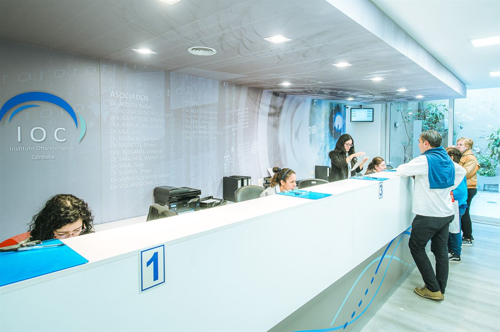
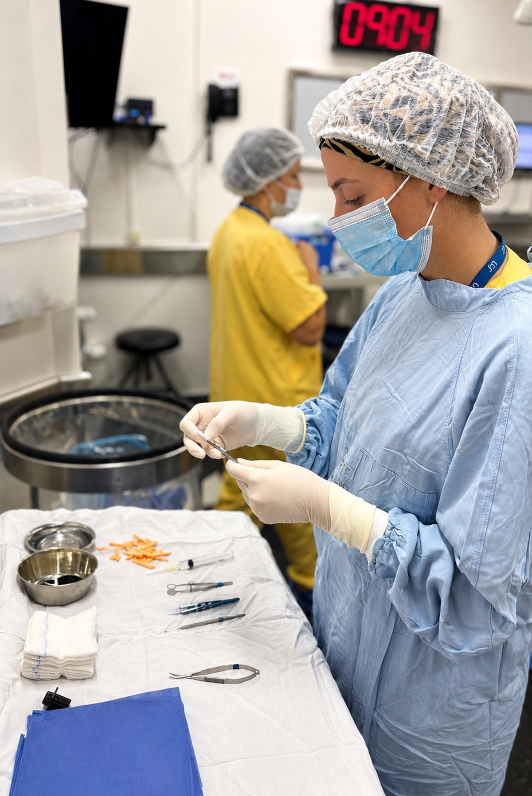

Confirmá día, horario y práctica
Al pedir turno, indicá si venís por consulta, control, estudio complementario o derivación médica.
Información
Turnos, estudios, coberturas y preguntas frecuentes para organizar tu visita.

Información simple y ordenada Datos prácticos para consultas, estudios y seguimiento.Guía para pacientes
Puntos simples para llegar con la información necesaria.
Al pedir turno, indicá si venís por consulta, control, estudio complementario o derivación médica.
Recetas, anteojos actuales, medicación ocular y estudios previos ayudan a completar la evaluación.
Algunas prácticas requieren suspensión de lentes de contacto, acompañante, ayuno o dilatación.
Si se dilatan las pupilas, la visión puede quedar borrosa durante algunas horas.
Obras sociales
La cobertura puede variar según plan, práctica o autorización. Recomendamos confirmarla al solicitar el turno.

Docencia
La docencia forma parte del espíritu institucional: revisión de casos, actualización científica, formación de profesionales e intercambio entre subespecialidades.
Preguntas frecuentes
Respuestas rápidas para organizar turnos, estudios y consultas.
Sí. Para consultas, estudios y controles se recomienda solicitar turno por WhatsApp para confirmar disponibilidad y requisitos.
Sí. Traer estudios previos, recetas, anteojos actuales y medicación ocular ayuda a que la evaluación sea más completa.
Algunos sí. En la página de estudios podés revisar indicaciones por práctica antes de asistir.
Si se indica dilatación pupilar, la visión puede quedar borrosa por unas horas. En esos casos conviene asistir acompañado.

Un sueño, tres visionarios
Tres médicos, una visión compartida y el comienzo de una historia que sigue mirando hacia el futuro. Conocé el origen del Instituto Oftalmológico de Córdoba y el camino que marcó estos 50 años.